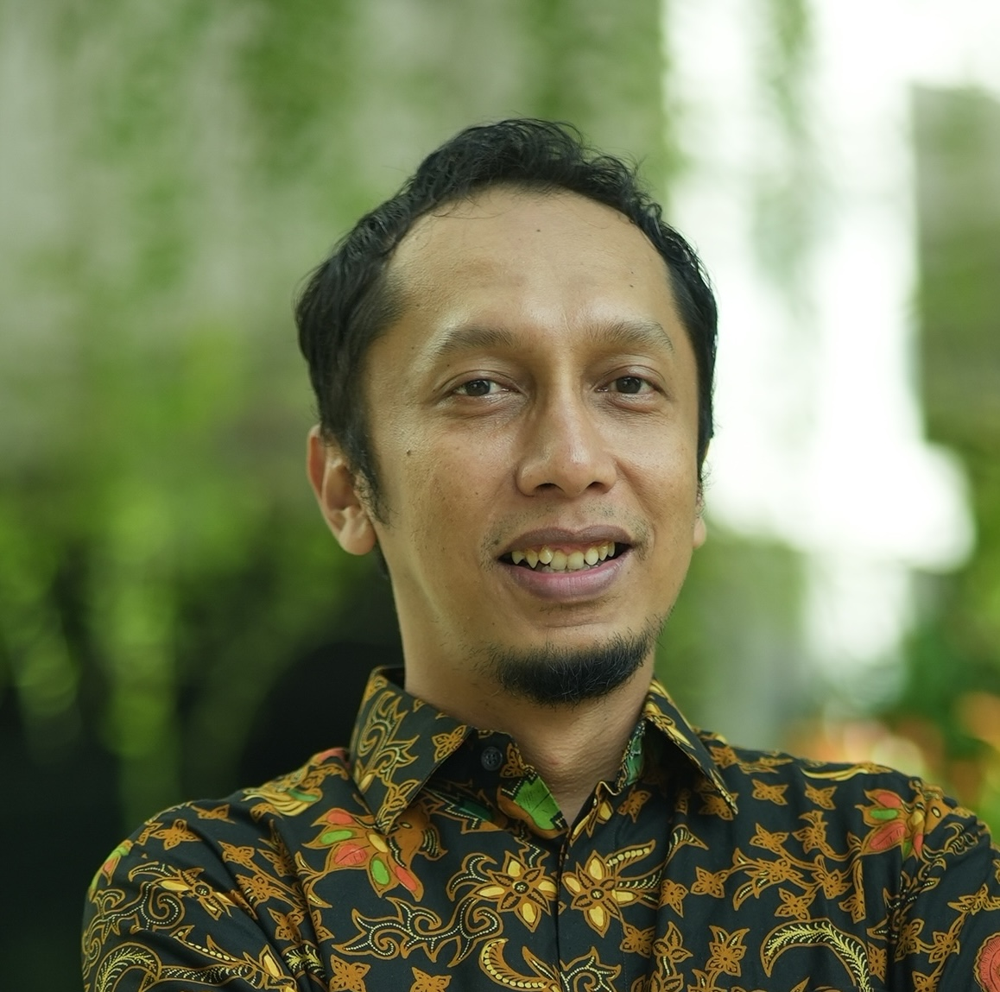

About
Nofie Iman is a lecturer at the Department of Management, Faculty of Economics and Business, Universitas Gadjah Mada. He earned a PhD in Management from the London School of Economics and Political Science and an MSc from the University of Manchester. His work focuses on technological innovation, digital platforms, and strategy.
He has been involved in research and consulting for government and industry and writes regularly for Indonesian media. Beyond teaching and research, he is a mid‑handicap golfer and a weekend cyclist.
Email: nofie.iman@ugm.ac.id
Homepage: http://feb.ugm.ac.id/
Personal: http://nofieiman.com/